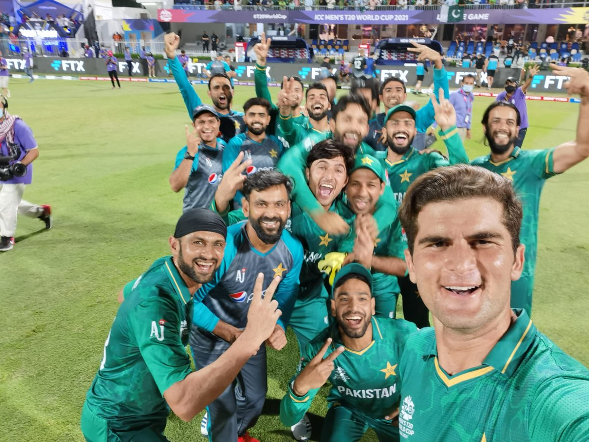
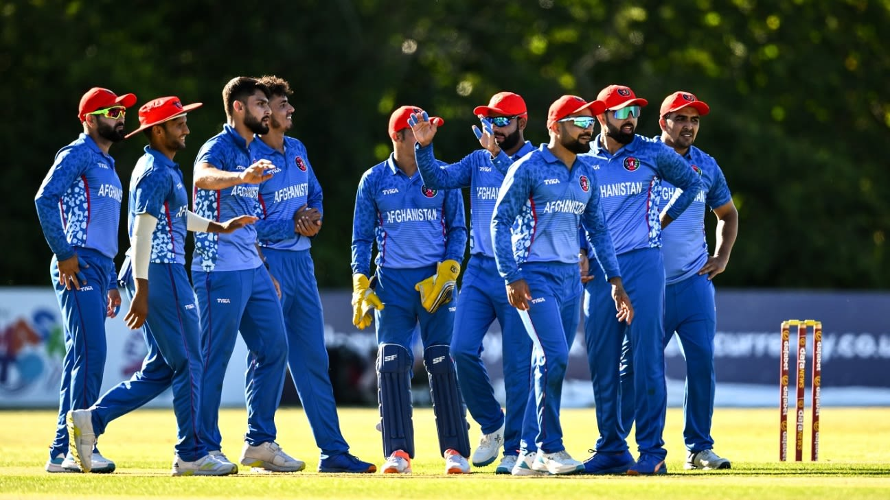
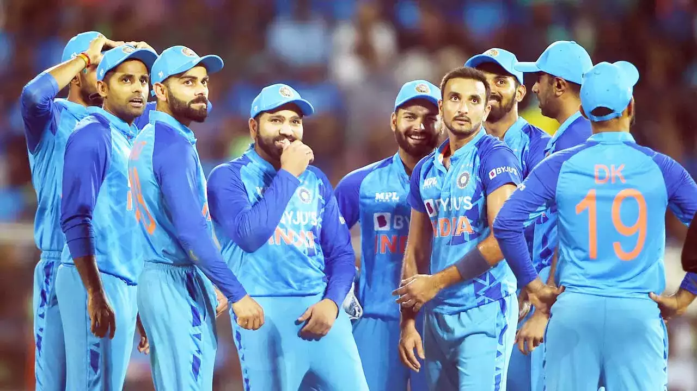

Welcome to National Cricket
Get the latest news, scores, and updates on your favorite cricket teams and players.
Our Teams
Team 1
Pakistan Cricket:
Pakistan cricket team is the national cricket team of Pakistan and is governed by the Pakistan Cricket Board (PCB). The team has a rich history in international cricket, having won the ICC Cricket World Cup in 1992 and the ICC World Twenty20 in 2009.
Pakistan has also been a strong force in Test cricket and has produced many legendary cricketers, including Imran Khan, Wasim Akram, Waqar Younis, Javed Miandad, and Inzamam-ul-Haq.
View TeamTeam 2
Afghanistan Cricket:
The Afghanistan cricket team is the national cricket team of Afghanistan and is governed by the Afghanistan Cricket Board (ACB). The team has been steadily rising in international cricket since gaining One Day International (ODI) status in 2009.
Afghanistan has qualified for the ICC Cricket World Cup twice, in 2015 and 2019, and has also qualified for the ICC World Twenty20 on multiple occasions.
The team has produced some talented cricketers, including Rashid Khan, Mohammad Nabi, and Mujeeb Ur Rahman.
View TeamTeam 3
India Cricket:
The Indian cricket team is the national cricket team of India and is governed by the Board of Control for Cricket in India (BCCI). The team has a huge fan following and is considered one of the most successful cricket teams in the world.
India has won the ICC Cricket World Cup twice, in 1983 and 2011, and has also won the ICC World Twenty20 title once, in 2007. India has produced many legendary cricketers, including Sachin Tendulkar, Kapil Dev, Sunil Gavaskar, MS Dhoni, and Virat Kohli.
View TeamUpcoming Matches
| Date | Match | Location |
|---|---|---|
| May 1, 2023 | Team 1 vs Team 2 | Stadium 1 |
| May 8, 2023 | Team 3 vs Team 1 | Stadium 2 |
| May 15, 2023 | Team 2 vs Team 3 | Stadium 3 |